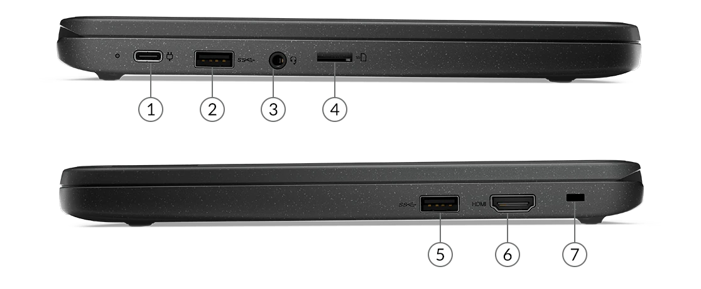
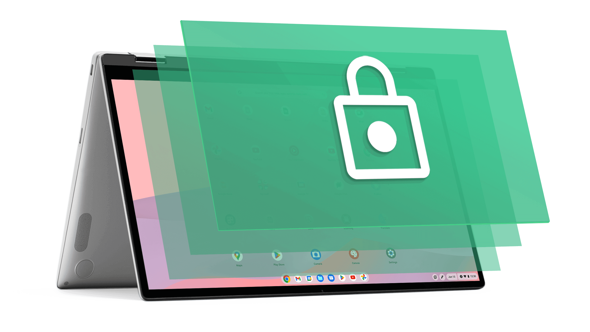
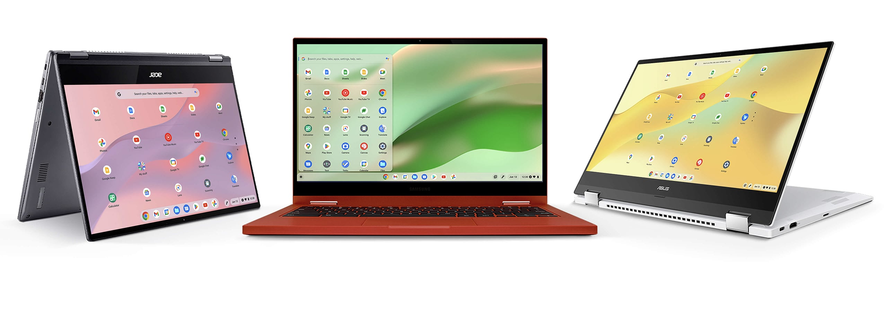

O Chrome OS é um sistema operacional do Google que usa o navegador Chrome como interface e roda aplicativos
da
web. Ele foi lançado em 2010 e é baseado em Kernel Linux.
Escalonamento de processo
O ChromeOS se baseia no time-sharing, divide a CPU em tempos e os programas “competem” pra receber
prioridade.
Gerenciamento de memória
O ChormeOS utiliza a paginação para fazer o gerenciamento de memória.
Dispositivos de entrada e saída
O ChromeOS segue os mesmos princípios que outros Sistemas Operacionais, entretanto o seu diferencial é o
foco
na simplicidade e segurança.
Segurança
No ChromeOS, cada software é separado no sandbox do seu Chromebook. Mesmo que um deles seja infectado, o
outros ficam protegidos.
Saiba mais
Origem ChromeOS
O Chrome OS é um sistema operacional do Google que usa o navegador Chrome como interface e roda aplicativos da
web. Ele foi lançado em 2010 e é baseado no Kernel Linux. Ele é projetado para ser simples, rápido, seguro e
conectado
com os serviços da Google. Ele é atualizado automaticamente e só funciona em máquinas específicas chamadas de
Chromebooks, que são fabricadas por diversas empresas. Ele também suporta alguns aplicativos do Android e do
Chrome. Ele é diferente do Chromium OS, que é um projeto de código aberto que permite modificações. Ele recebeu
críticas iniciais por ser limitado, mas depois foi avaliado pelo seu desempenho no hardware.
Escalonamento de processo
O ChromeOS se baseia no time-sharing, divide a CPU em tempos e os programas “competem” pra receber
prioridade.
O escalonamento do ChromeOS é de prioridade, o próprio sistema vai reajustando as prioridades e as fatias de
tempo conforme os programas forem executando. Um programa cujo não teve uma fatia de tempo por um longo
intervalo
de tempo terá sua prioridade aumentada, enquanto o programa mais recente terá sua prioridade
diminuida.
Os processos do ChromeOS são preemptivos, isso significa que o SO analisa as prioridades dos programas conforme
eles vão sendo executados. Caso a próxima fatia de tempo tenha um programa com uma prioridade maior do que o
programa que está sendo executado, o SO interrompe a execução e começa a executar o com maior prioridade.
Gerenciamento de memória
O ChromeOS utiliza a paginação para fazer o gerenciamento de memória
Na paginação utiliza se a memória virtual, cujo é uma memória secundária que armazena programas que serão
executados porém ficam na memória virtual por falta de espaço
Os programas são divididos em páginas, essas páginas ficam na memória virtual (chamadas de páginas virtuais) e
elas são mapeadas na memória principal também por páginas.
Gerenciamento de Entrada e Saída

Todas as entradas que voce precisar!
Menos entrada de cabo ethernet
O Chrome OS segue os mesmos princípios que outros Sistemas Operacionais, entretanto o seu diferencial é o foco
na
simplicidade e segurança.
Ele suporta uma variedade de dispositivos de entrada, por exemplo: o teclado, o mouse, os touchpads e as
touchscreen(normalmente de tablets e chromebooks), também tem suporte para dispositivos bluetooth, sejam eles de
entrada ou saída.
Enquanto os dispositivos de saída são, por exemplo: a Tela, as Caixas de Som e as Impressoras.
Ambos dispositivos são gerenciados pelos devidos drivers e interfaces do sistema, como o Chrome OS foi feito
baseado no ChromeOS, seus drivers fazem parte do Kernel.
O seu agendamento de E/S é feito através do CFS(Agendador Completamente Justo / Completely Fair Scheduler),
passando por um processo de prioridades,
possui multitarefas para rapidamente executar diferentes processos dando para cada um, um tempo justo da CPU.
Segurança

Segurança integrada
O sistema ChromeOS possue funções que já vêm com o dispositivo para garantir a segurança.
Sandbox
No ChromeOS, cada software é separado no sandbox do sistema. Mesmo que um deles seja infectado, o
outros ficam protegidos.
Chip de segurança
Todo Chromebook possui um chip de segurança integrado para criptografar os dados mais
sensíveis do usuário e máquina e para proteger contra o acesso não autorizado.
Powerwash
Mesmo sendo muito difícil algo dar errado, existe a solução com um clique. Com o recurso Powerwash
no Chromebook, o dispositivo é resetado para as configurações originais com facilidade e ainda se protege
contra malware.
Curiosidade

O que são os Chromebooks?
Chromebooks são computadores portáteis feitos sob medida para rodar o Chrome OS. Eles não rodam Windows, não tem
HD e nem “aplicativos” no sentido tradicional da
palavra: seus programas são sites na internet (como GMail, Picnik, Google Docs e muitos outros) e os arquivos
ficam armazenados “na nuvem”, em serviços como o Dropbox, o próprio Google Docs ou similares.
Se por fora um Chromebook lembra um notebook, se analisarmos o software e hardware é possível notar várias
diferenças. A Google trabalhou em conjunto com os fabricantes para realizar uma série de mudanças e otimizações
nas máquinas, que incluem teclados sob medida para o acesso à internet, longa autonomia de bateria e tempo de
boot
bastante reduzido.